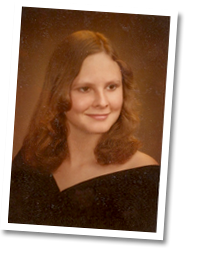

<!DOCTYPE HTML PUBLIC "-//W3C//DTD HTML 4.01//EN" "http://www.w3.org/TR/html4/strict.dtd">

<html>
	<head>
		<title>Thleen and David's Wedding Site</title>
		<meta http-equiv="content-type" content="text/html;charset=iso-8859-1" />
		<meta name="description" content="Your one-stop website for all things Thleen and David's wedding." />
		<meta name="keywords" content="" />
		<link rel="Shortcut Icon" href="heartFav2.ico" />
		<link href="wedding4.css" rel="stylesheet" type="text/css" media="all" />
	</head>
	<a name="top"><body class="wrap"></a>
		
		<a href="#registry" class="rollover" title="Where we're registered"><span class="displace">Where we're registered</span></a>
		<style type="text/css">
			a.rollover {
				position:absolute;
				left: 40px;
				top: 250px;
				display: block;
				width: 145px;
				height: 176px;
				text-decoration: none;
				background: url("images/registry.png");
			}
			
			a.rollover:hover {
				background-position: 0 -176px;
			}
			
			.displace {
				position: absolute;
				left: -5000px;
			}
		</style>
		
		<a href="https://www.facebook.com/groups/236633879793338/" class="FBrollover" title="Our Facebook Page" target="_blank"><span class="displaceFB">Our Facebook Page</span></a>
		<style type="text/css">
			a.FBrollover {
				position:absolute;
				left: 1120px;
				top: 700px;
				display: block;
				width: 73px;
				height: 73px;
				text-decoration: none;
				background: url("images/fb2.png");
			}
			
			a.FBrollover:hover {
				background-position: 0 -73px;
			}
			
			.displaceFB {
				position: absolute;
				left: -5000px;
			}
		</style>
		
		<div id="ThleenSenior">
			
		</div>
		<div id="DavidSenior">
			
		</div>

		<div id="gift">
			
		</div>
		
		<!--<span id="email"><a href="mailto:dgardetti@gmail.com"></a></span>-->

		<div id="towners">
			<div id="bannercontainer">
				
			</div>	
			<ul class="cssmenu">
				<li class="out"><a href="#out" class="selected"><span></span></a></li>
				<li class="big"><a href="#day"><span></span></a></li>
				<li class="party"><a href="#party"><span></span></a></li>
				<li class="couple"><a href="#couple"><span></span></a></li>
				<li class="backstage"><a href="#back"><span></span></a></li>
			</ul>
			<div id="mainimage2">
				
			</div>
			<div id="intro">
				<p style="margin-top: 25px;">We are very excited to share our wedding celebration with you! We are two of the luckiest people alive to have such amazing friends and family.</p>
				<p>This website is designed to communicate all the details you need surrounding the big day.  As we all know, weddings and traveling can be stressful.  We want to make easy and fun for all our guests so that we may all sit back on the big day and celebrate!  There is something for everyone, including a section especially designed to assist those who are traveling from out of town.  We will be updating the site as our preparations progress so please, check back often.  In the meantime, please email us with any questions you may have.</p>
			</div>
		
<!-- out of towners -->

			<a name="out"></a>
			<h1>Local Hotels</h1>
			<p>Are you coming from out of town and are looking for a hotel near the Wedding/Reception location?   We are holding both the ceremony and reception in a private home; however, there are many lodging options that are nearby.  Below is a map showing just a few of the hotels in the most convenient locations:</p>
			<p><iframe width="675" height="450" frameborder="0" scrolling="no" marginheight="0" marginwidth="0" style="margin-left: 35px;" src="https://maps.google.com/maps/ms?hl=en&amp;ie=UTF8&amp;oe=UTF8&amp;msa=0&amp;msid=200060763460576851178.0004c8ce882d54eaf3b32&amp;t=m&amp;ll=37.406437,-122.091236&amp;spn=0.061361,0.115871&amp;z=13&amp;output=embed"></iframe><br /><small style="margin-left: 45px;">View <a href="https://maps.google.com/maps/ms?hl=en&amp;ie=UTF8&amp;oe=UTF8&amp;msa=0&amp;msid=200060763460576851178.0004c8ce882d54eaf3b32&amp;t=m&amp;ll=37.406437,-122.091236&amp;spn=0.061361,0.115871&amp;z=13&amp;source=embed" style="color:#0000FF;text-align:left;" target="_blank">Local Hotels</a> in a larger map</small></p>
			<h1>Attractions</h1>
			<p>There is much to enjoy while visiting the Bay Area.  San Francisco and the surrounding cities are home to some of the best restaurants in the world, landmarks, beaches, museums and much more.</p>
			<p>We couldn't put everything on this list. We have however, collected a short list of places and activities first time visitors may enjoy while you visit the beautiful West Coast.  Warning, some of these locations are tourist traps but if you have never visited "The City" you may want to do of bit of a guilty indulgence.</p>
			<p>Leave your heart in San Francisco</p>
			<p>Ooo and Ahhh at some really awesome art</p>
				<ul class="bodyul">
					<li class="bodyullinks"><a href="http://www.sfmoma.org/">MOMA</a></li>
					<li class="bodyullinks"><a href="http://deyoung.famsf.org/">de Young Museum</a></li>
				</ul>
			<p>Get your Science on!</p>
				<ul class="bodyul">
					<li class="bodyullinks"><a href="http://www.calacademy.org/">California Academy of Sciences</a></li>
				</ul>
			<p>Pretend you are Al Capone for a couple of hours. Hint: If you are interested in touring Alcatraz you must schedule when you will be going and purchase tickets before you trip.  Most days often sell out long in advance.</p>
				<ul class="bodyul">
					<li class="bodyullinks"><a href="http://www.alcatrazcruises.com/">Alcatraz</a></li>
				</ul>
			<p>Stroll across the Bridge</p>
				<ul class="bodyul">
					<li class="bodyullinks"><a href="http://goldengatebridge.org/visitors/">Golden Gate Bridge</a></li>
				</ul>
			<p>Put on your walking shoes and hike from the Ferry Building past Pier 39 and Fisherman's Wharf over to Ghiradelli Square.  Shop, survey the sites including the freak show, buy a whole crab, and eat to your heart s content.  Finish it off by stopping in the soda shop and eating an amazing ice cream sundae.</p>
				<ul class="bodyul">
					<li class="bodyullinks"><a href="http://www.ferrybuildingmarketplace.com/">Ferry Building</a></li>
					<li class="bodyullinks"><a href="http://www.fishermanswharf.org/">Fisherman's Warf</a></li>
					<li class="bodyullinks"><a href="http://www.ghirardellisq.com/ghirardellisq/contact_ml.htm">Ghiradelli Square</a></li>
				</ul>
			<p>Spend the evening with a beer and dog at our favorite baseball stadium watching our team knock them into McCovey Cove.</p>
				<ul class="bodyul">
					<li class="bodyullinks"><a href="http://sanfrancisco.giants.mlb.com/sf/ballpark/index.jsp">San Francisco Giants</a></li>
				</ul>
			<p>Do you know the way to San Jose?  We do!</p>
			<p>Check out everything you want to know about computers.  There is a reason they call it the Silicon Valley.</p>
				<ul class="bodyul">
					<li class="bodyullinks"><a href="http://www.computerhistory.org/">Computer History Museum</a></li>
				</ul>
			<p>Into creepy haunted mansions built by insane old ladies?  Check out the Winchester Mystery House.</p>
				<ul class="bodyul">
					<li class="bodyullinks"><a href="http://www.winchestermysteryhouse.com/">The Winchester Mystery House</a></li>
				</ul>
			<p>You want to know why Thleen is such a hippie?  Check out Santa Cruz but remember: Keep it Weird.</p>
			<p>Go back in time and enjoy a stroll on the 100 year old boardwalk. Scream on the Giant Dipper and toss a brass ring on the Looff Carousel.  If you are a movie geek, stand under the Giant Dipper sign and pretend you are Dirty Harry in Sudden Impact.  If vampires are more your thing, pretend you are a  Lost Boy  along the beach.</p>
				<ul class="bodyul">
					<li class="bodyullinks"><a href="http://www.beachboardwalk.com/">Santa Cruz Beach Boardwalk</a></li>
				</ul>
			<p>Catch up on Marine Life. Monterey Bay Whale Watching, Aquarium, Cannery Row and so much more!</p>
				<ul class="bodyul">
					<li class="bodyullinks"><a href="http://www.montereybayaquarium.org/">The Monterey Bay Aquarium</a></li>
					<li class="bodyullinks"><a href="http://www.canneryrow.com/">Cannery Row</a></li>
					<li class="bodyullinks"><a href="http://www.montereywharf.com/">Fisherman's Warf</a></li>
				</ul>
			<p>Love Wine?  You're in luck!  Wine tasting is everywhere.</p>
				<ul class="bodyul">
					<li class="bodyullinks"><a href="http://www.sonomavalley.com/">Sonoma</a></li>
					<li class="bodyullinks"><a href="http://napavalley.com/">Napa</a></li>
				</ul>
			<div id="backtotop"><p><a href="#top">Back to the top</a></p></div>
		
<!-- The Big Day -->

			<a name="day"></a>
			<h1>Wishes</h1>
			<p>Each RSVP card includes a space to write wishes on.  Theses wishes will be (spoiler alert!) incorporated into the ceremony.  This is your chance to participate.  Even if declining to attend, please write your wish on the reverse of the RSVP card, return it to Thleen and David and stay tuned during the ceremony to see your wish in action.</p>
			<h1>Attire</h1>
			<p>The wedding and reception are in a garden setting; therefore, garden party attire is appropriate. Examples would include summer suits or slacks for men, spring dresses or slacks for women. For the sake of the lawn, your knees and ankles, we ask that the ladies (and gentlemen) please wear flat shoes. Also, this ensures the bride will not be taller than the groom.</p>
			<h1>Menu</h1>
			<p>We're excited to have <a href="http://www.roliroti.com/">Roli Roti</a> cater our reception. One of the first gourmet food trucks in the SF Bay Area, they are famous for their porchetta and roasted chicken.  Our menu includes a buffet of their specialties and a selection of salads and bread.</p>
			<p>One of the most amazing cakes you will ever savor!  We're honored to have <a href="http://gateauxrose.com/">Rose Gillen</a> bake our cake to celebrate our wedding.</p>
			<h1>Location</h1>
			<p>The wedding and reception will be held at 12020 Kate Drive, Los Altos Hills, CA.  Please be there by 4:30 and park along the street and enter up the front steps of the home where you will be greeted by our lovely flower girls.</p>
			<p style="margin-left: 160px; margin-top: 25px;"><iframe width="425" height="350" frameborder="0" scrolling="no" marginheight="0" marginwidth="0" src="https://maps.google.com/maps?hl=en&amp;safe=off&amp;q=12020+Kate+Drive+Los+Altos+Hills,+CA+94022&amp;ie=UTF8&amp;hq=&amp;hnear=12020+Kate+Dr,+Los+Altos+Hills,+Santa+Clara,+California+94022&amp;gl=us&amp;t=m&amp;z=11&amp;iwloc=A&amp;output=embed"></iframe>
			<br /><small><a href="https://maps.google.com/maps?hl=en&amp;safe=off&amp;q=12020+Kate+Drive+Los+Altos+Hills,+CA+94022&amp;ie=UTF8&amp;hq=&amp;hnear=12020+Kate+Dr,+Los+Altos+Hills,+Santa+Clara,+California+94022&amp;gl=us&amp;t=m&amp;z=11&amp;iwloc=A&amp;source=embed" style="color:#0000FF;text-align:left" target="_blank">View Larger Map</a></small></p>
			
			<div id="backtotop"><p><a href="#top">Back to the top</a></p></div>

		
<!-- The Wedding Party -->

			<a name="party"></a>
			<h1>Maid of Honor</h1>
			<p>Olivia is Thleen's daughter. A talented singer-songwriter and overall artist, Olivia can be found at any given time playing her guitar or designing her next tattoo. Olivia loves to watch horror movies with David and is fascinated with zombies. This is very lucky for Thleen since she is not a huge fan of gore and such on film. Hence, whenever the newest scare-fest arrives, David has a date to the movies but he has to buy the popcorn. If Thleen gets pulled along, she can be found covering her face and waiting for them both to tell her it is safe to look.</p>
			<hr>
			<h1>Bridesmaid</h1>
			<p>Lorrie first met Thleen in 1986 when she became her sister-in-law and has been her dear friend ever since. She also is a much loved Aunt to Thleen's children and her family continues to be part of Thleen and David's extended family. Lorrie is a nurse, mother of two and has been married to Bob for close to 30 years. Regular visitors to Southern California, David and Thleen are hoping the wedding gives Lorrie, Bob, Kathy and Matt a wonderful taste of all that is great in Northern California.</p>
			<hr>
			<h1>Best Man</h1>
			<p>The Best Man, Austin White (age 7), says he is excited to see Uncle David and Auntie Thleen "finally" get married, but because he is such a snappy dresser he is especially looking forward wearing a tuxedo for the big day!  He promises to throw a rockin' bachelor party complete with a good bottle of bubbly (coca cola) and a few intense rounds of Go-Fish.  He is intrigued by the idea of jello shots, although he does not understand why you would 'invite girls' to a guys' night out.  His interests outside of Best-Manning are soccer, Legos, Mind Craft and skiing.  When he grows up his goal is to build a rocket called the "F-One-Five Phoenix" that will be able to fly very close to the sun without burning up.  His future plans also include his own marriage to his long time love, Gracie, at the top of the Eiffel Tower only as long as there is no kissing EVER.  Austin absolutely HATES anything that has to do with kissing (watch during the ceremony for proof of this), and sadly he did not inherit the Gardetti dance gene but rather the White family anti-dancing mutant gene.  Well, nobody's perfect.</p>
			<hr>
			<h1>Groomsmen</h1>
			<p>Bill Cawley<br />I was born in Los Angeles, where I attended school through college, met my wife (Nancy), had a son (Jeff), worked for about 10 years and then left to move to Northern California when Jeff was ready to enter middle school. We settled in Los Gatos and quickly bought a new home near Summit Road in the Santa Cruz Mountains.  Jeff began C. T. English Middle School as a 7th grader and both Nancy and I started new jobs with Hewlett Packard.  At HP, I worked with Dee, David's mother, and soon met both David (14) and Michelle (12).</p><p>A short time later Dave's family moved to a new home near us in the Santa Cruz mountains and over the next several years we travelled together on vacations to Mexico and were evacuated together during various natural disasters.</p><p>I have included a recent shot of Nancy and me at the 7th game of NLCS where the SF Giants won the pennant, a step on their way to becoming 2012 World Champs.  I know Dave and Thleen are big Giants fans, so the setting just seems appropriate.</p><p>We are very much looking forward to Dave and Thleen's big day.</p>
			<hr>
			<p>Thleen's oldest son, Max is the life of the party. A very talented drummer who plays with two local bands, he loves music. Fascinated by everything aviation, Max is a certified A&amp;P mechanic. He currently works at Tyson foods as a mechanic in the biggest bacon factory in the world so as you can imagine, isn't as thrilled with the smell of bacon as the rest of us. Max has built a reputation for going all out for Halloween. He recently built his own "Bender" costume which has won him awards and the admiration of the supreme Futurama Geek, David.</p>
			<hr>
			<p>Mick is Thleen's middle child. Mick always surprises with the unexpected joke and has a great sense of humor. He loves to hunt, fish and camp, so when the weather is good, you can find him out trying to catch something. A skilled mechanic, Mick also works at the bacon factory with his brother. He is very excited to go on vacation to California since he loves everything skateboarding and Santa Cruz. Mick works the overnight shift so being able to enjoy normal people hours will be a great way for him to relax while celebrating in the bay area with the family.</p>
			<hr>
			<h1>Flower Girls</h1>
			<p>Josephine is really excited to be a flower girl for Thleen and David. It's been a topic of conversation for months. Speaking of conversation, Josephine is a chatterbox and has been telling all her friends about the wedding. Josephine likes to play tetherball, ski, act in school plays, sing in choir (and just about everywhere else), and read. Josephine also likes to play with her friends. David has been Jo's friend for years, but Thleen is a new friend...though it already feels like Jo has known her forever.</p>
			<br /><hr>
			<p>Sydney loves airports. She loves to travel, but unlike most every other person on the planet, loves being in airports while traveling. The next place Sydney would like to visit is Spain. When home, Sydney loves reading, TV, and Hollywood trivia! She is one of the least athletic people you will ever meet. She can only ski, and doesn't even bend her knees. She can promise absolutely no feats of athletic grace or ability at the wedding. Nonetheless, Sydney is super-psyched to be a flower girl at David and Thleen's wedding!</p>
			<br /><br />
			<hr>
			<h1>Officiant</h1>
			<p>Michelle White, aka: "The Wedding Officiant" or "High Priestess of Ceremonies", is David's younger sister.  In keeping with the traditions of their childhood, regardless of being full-fledged grown ups, Michelle takes the job of torturing her older brother (and now his bride to be) very seriously.  She loves holding brainstorming sessions over email to talk about interesting wedding themes: Zombie Attack? King Tut? Steve Martin characters?... to name a few.  Other conversations have included what hat she should wear for the ceremony: pope hat, tiara (Michelle's favorite of course), fortune teller turban, or mariachi sombrero if it's a sunny day.  Please don't hesitate to vote on your favorite hat or send more ideas!  Michelle has shared 14 long and happy years of marriage to her husband Will.  Together they have a super-kid, Awesome Austin (age 7) who is David's Best Man.  True urban-ites, Michelle and her family love San Francisco - she has lived there more years than she'll ever admit!   Michelle feels it is truly an honor to be a part of David and Thleen's very special day.   Maawwwiiiige....</p>
			
			<div id="backtotop"><p><a href="#top">Back to the top</a></p></div>

		
<!-- The Couple -->

			<a name="couple"></a>
			<h1>Our Story</h1>
			<p>You could say that we met in a scene straight from The Breakfast Club.   Los Gatos High School had the usual cast of characters.  There were the nerds, the jocks, and the popular kids.  We were the  mountain kids  who lived on the hill and traveled to the valley to attend high school in Los Gatos.  We first met on the back of a bus on the way home from school.  </p>
			<h1>Act I</h1>
			<p>David was a typical 80's teen wearing a Police t-shirt or maybe it was the bolo tie he liked to wear.  Thleen was the strange one.  She wore a black Fedora, black trench coat, black fingernail polish, and dark red lipstick.  David thought she looked like the coolest, hottest girl ever.  Thleen had seen the super cute guy with the green eyes on the bus before but didn't know his name.  She asked her friend and sister about him once. No one seemed to know who he was. </p>
			<p></p>
			<P>One day, both of these kids happened to be sitting in the back of the bus just a couple of seats away from each other.  As the bus drove past Lexington Dam, David turned backwards on the bus seat and rose up on his knees to talk to a boy behind him.  He really just wanted to get Thleen's attention.  Thleen was listening to a mix tape on her Walkman.   Thleen saw her chance to talk to him and get his name. She took off her headphones. </p>
			<p>David said, "What are you listening to?"
			<br />Thleen responded, "Peter Gabriel"
			<br />"Oh, that is weird." He smiled at her. 
			<br />She smiled back. "What bands do you like?"
			<br />Thleen stopped hearing anything after that and falls right then and there.  Her mind was giddy.  He is soooooo cute!  Eeek!</p>
			
			<h1>Act II</h1>
			<p>Over the next few years we became friends.  We hung out with our best friends Lyle and Amanda at school.  We spent lunch breaks on Church Street with friends. There was a huge crush involved from both sides; but, both of us apparently were too shy or too stupid to say anything to each other.  Soon, David got a Volvo and would give Thleen a ride home once in a while.  His little sister Michelle always called the front seat, so Thleen was stuck in the back seat.  No chance to make a move there!   As you will soon see, little sisters play a big role in this story. As often happens with teenagers, there was one very infamous kiss.  This kiss lives in memory as it was Thleen s first.  (Insert collective "Awwww" here)  Graduation came quickly in 1984.  They went their separate ways as people do after high school.  David heard from little sister Tenara that Thleen had moved to Alaska, got married and had children.  Thleen never heard where David went but often wondered where life took him.  Thleen settled in Iowa with her family.  David stayed in the Bay Area.  Life happened.  </p>
			<h1>Act III</h1>
			<p>They say the internet changes lives. 25 years after high school and Thleen had recently separated from her marriage.  David had never married.  The 25th class reunion was scheduled for that summer.  Thleen had found Lyle, David's best friend from high school, on the internet a year or so earlier.  He talks Thleen into joining Facebook and gives her David's e-mail.  She writes David an e-mail to say hi and catch up to which.... He promptly ignores. A few of months later, David joins Facebook and sends Thleen a friend request.  They start to IM each other and begin to catch up on so many years.  It starts out just like it did 25 years earlier. "What bands do you listen to?"  "What is your favorite movie?"  The IMs become a daily occurrence as they chat about all the years that have passed. As mentioned earlier, little sisters tend to play a part in this story, so of course, one pops back into the tale.  Thleen's little sister Tenara invites David to Las Vegas via Facebook.  Mick, Thleen's middle child was celebrating his 21st birthday with many friends and family.  The brave David agrees to come meet them for the weekend.  He was one man facing a big group of unknown 20 somethings and two women that he hadn't seen in 25 years.  </p>
			<h1>The Next Chapter</h1>
			<p>On May 11, 2013, over 30 years since we first met on that bus ride going up Highway 17, our little sister Michelle will preside over our wedding.  All these years later, the little sister is in the front seat again; but, this time she is bringing us together.  </p>
			<p>It is the ultimate sappy movie script.  We know now that this is the way life should be.  Everyone should be by the side of the one person who can always make you smile.  We are very lucky to share both a history and a future together.  We are glad to we have you join us for our wedding as we celebrate the love we have for each other, our family and our friends.  We have found our bliss in each other and for this we are very grateful. </p>
			<p>Much Love to all!
			<br />Thleen and David</p>

			<div id="backtotop"><p><a href="#top">Back to the top</a></p></div>
			
			

		
<!-- Gift Registry -->

			<a name="registry"></a>
			<p>We are registered at Target, Kohl's, Williams Sonoma and Amazon (links below).  Because we are traveling for the wedding, shipping of gifts to our home is appreciated.</p>
			<ul>
				<li><a href="http://www.target.com/GiftRegistrySearchViewCmd?registryType=WD&jsRequest=true&catalogId=10051&status=completePage&cumulativeTime=-1&listId=sG9lHg3A3YmWN5r1MUi09w&noOfPings=&registryFirstName=thleen&langId=-1&segmentGrpName=I&storeId=10151&registryLastName=blood" target="_blank">Target</a></li>
				<li><a href="http://www.kohls.com/upgrade/gift_registry/kohlsgrw_registry_view.jsp?ATR_KOHLSGR_JSP_EVENT_TYPE=0&giftRegistryID=1846125&FOLDER%3C%3Efolder_id=1408474853971186&bmForm=grw_search_registry&bmFormID=jOqHYxa&bmSubmit=OPEN&bmUID=1359920310088&bmHash=70c514c7cd5d0a1aa45f39eec8f302153c585320" target="_blank">Kohl's</a></li>
				<li><a href="http://www.williams-sonoma.com/registry/3206553/registry-list.html" target="_blank">Williams-Sonoma</a></li>
				<li><a href="http://www.amazon.com/gp/registry/registry.html?ie=UTF8&id=5TUOOD9OHP3W&type=wedding" target="_blank">Amazon</a></li>
			</ul>
			<div id="backtotop"><p><a href="#top">Back to the top</a></p></div>			
		</div>
	</body>
</html>